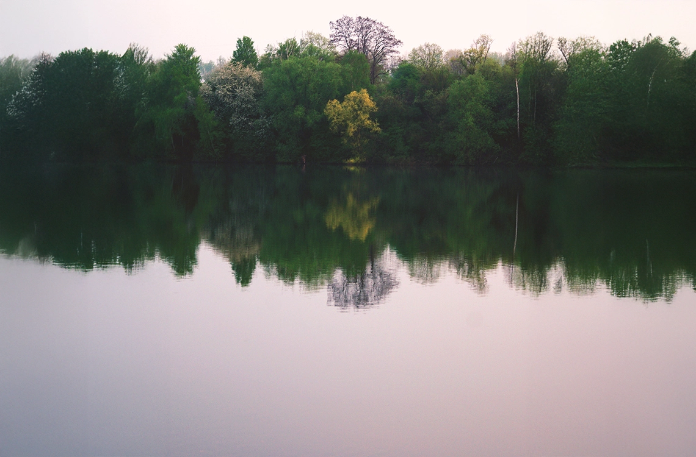
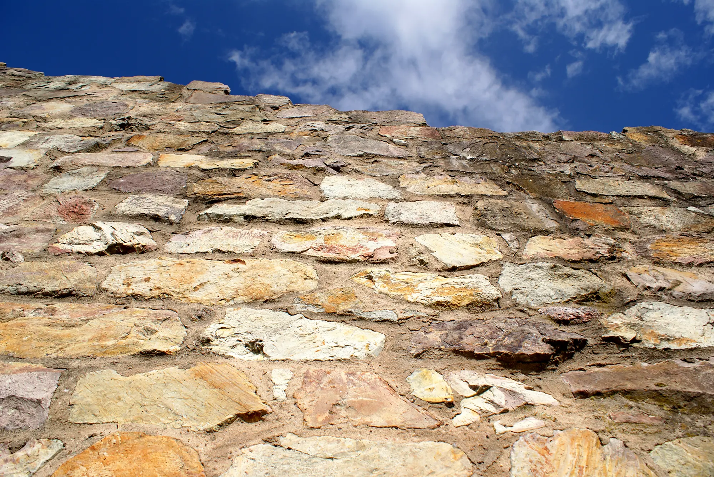

What
is [WHATWESEE]?
A visual journal of places, structures, creatures and details that shape the way I see the world. It is an ongoing archive of photographs, observations and stories.
A Photography Journal
by Benjamin Bennewitz
Images from places, structures, creatures and details that shape the way we see the world.
Four perspectives.
One continuous observation.
A personal photographic journal and ongoing archive by Benjamin Bennewitz.
A visual journal of places, structures, creatures and details that shape the way I see the world. It is an ongoing archive of photographs, observations and stories.
To pay closer attention. Photography helps me notice the extraordinary in the ordinary and to understand my surroundings more deeply.
With curiosity, patience and a focus on light, composition and genuine moments. I work mostly on location and let the subject guide the process.
Primarily in Germany and across Europe: in mountains, cities, rural areas and in between. Familiar places, new places and the spaces in between.
Landscapes, architecture, animals and flowers. Four perspectives that often intersect and together form a broader understanding of the world around us.
Vast spaces, quiet moments and ever-changing light. Landscapes remind us how small we are — and how much there is to discover.

Built environments tell stories of time, purpose and people. In lines, surfaces and spaces we find a different kind of nature.
Encounters, moments and behaviour. Animals show us presence, instinct and a raw kind of truth.
Small details, complex structures and quiet beauty. Flowers reveal an intricate world that often remains unseen.
A short reflection on what photography means to me — and why the details often matter most.
Photography is a way of paying attention. It slows me down, makes me look closer and helps me see what is often overlooked. A mountain ridge, a concrete wall, an animal's gaze or the structure of a flower — each of these can reveal an entire world when we take the time to really look.
I am drawn to the tension between the vast and the small, the natural and the built, the obvious and the hidden. These contrasts remind me that everything is connected, and that beauty often lies in the details.
Through this project, I want to create a growing archive of moments that inspire curiosity and a deeper appreciation for our surroundings. Not as a documentation of extraordinary events, but as a collection of honest observations from everyday life and from places worth remembering.
“The more we look,
the more we find.”— Benjamin Bennewitz

Four perspectives. A growing collection.
More to see, more to discover.
